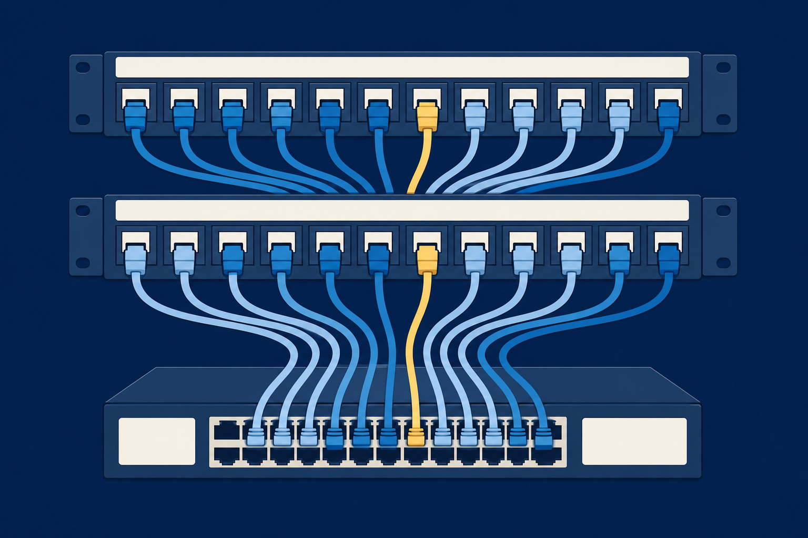
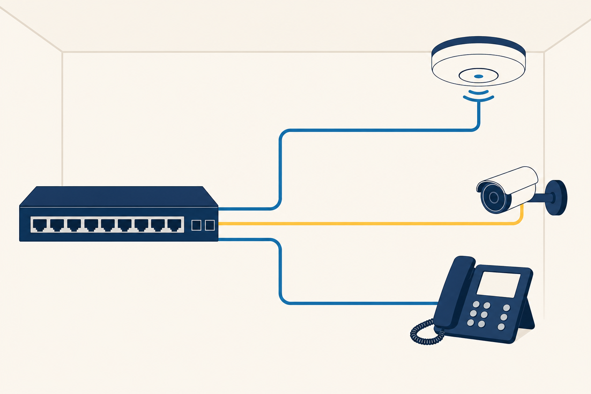
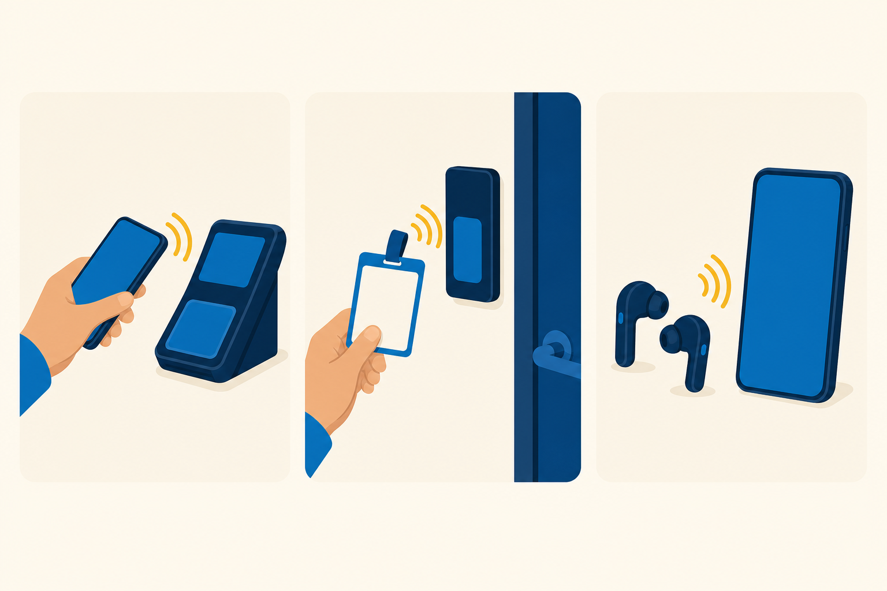
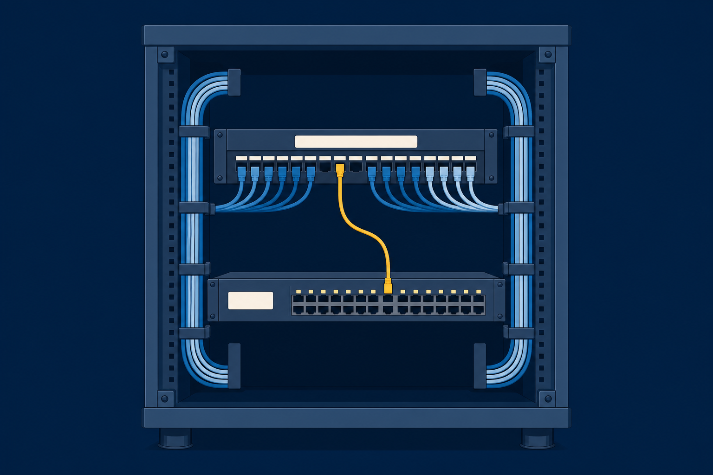

01
Classify
networks by reach and by role: PAN to WAN, SOHO to datacenter.

Network types, the hardware behind one office LAN, the cables that carry it, and the Wi-Fi that cuts the cord.
Start here: Look at the wall plate nearest you. Where does that jack go?
networks by reach and by role: PAN to WAN, SOHO to datacenter.
one frame through the NIC, patch panel, and switch that move it.
the cable category and Wi-Fi standard each job calls for.
You hit Save, and the file lands on the office server in a blink. It did not fly there.
Talk with a partner:
List the hardware the file crosses on its way. Count the stops.
A smartwatch and earbuds paired to a phone over Bluetooth.
A single geographic location, like this campus.
Coverage the size of a metro area.
A large geographic area linking sites together.
One appliance does every connectivity job for a small or home office.
Dedicated devices in tiers, positioned for a secure environment.
A whole site for server resources: dedicated power, cooling, and access controls.
Same connectivity jobs at every scale. Only the packaging changes.
One frame, headed for the file server, rides the rest of class. Every device it crosses is this lesson.
Five stops. Zero magic.
OUI · 24 bits · the maker
This card · 24 bits
48 bits, written in hex, burned into every NIC: Ethernet, fiber, or wireless.
See your own: ipconfig /all on Windows, ip addr on Linux.
Rear: punch-down IDC · Front: RJ-45 ports
Label both ends. An unlabeled panel turns every future fix into archaeology.
Port 12 lights up
Each switch port is its own collision domain. The whole switch shares one broadcast domain.
With a partner: Predict the switch’s move, and what finally teaches it the server’s port.
No PoE switch? A PoE injector adds power to one link.

Four twisted copper pairs, one jacket. Up to 100 m (328 ft).
Foil on every pair, braided screen under the jacket. EMI stays out.
High-interference floor, like a shop full of motors? Spec STP.
The Desk 12 run is Cat 6A: 10 Gbps for the full 100 m. Cat 6 still carries 1 Gbps to 100 m.
Trim the outer jacket.
Cut wires to length.
Seat wires into jacks and panels.
Close an RJ-45 plug on a cord.
Same order both ends: straight-through. T568A on one end, T568B on the other: crossover. Smaller RJ-11 jacks serve phone lines.
Commit first: Which tool comes out first, and why?
Higher bandwidth, longer runs than copper. Two builds: single-mode and multimode.
Radio Grade (RG) ratings, terminated in a threaded F-type connector.
Two jacket ratings matter: plenum for air-handling spaces, direct burial for underground runs.
The AP bridges 802.11 radio onto the cabled LAN. Its own MAC becomes the network’s BSSID: the same 48-bit format from Desk 12.
On 2.4 GHz, only channels 1, 6, and 11 stay clear of each other.
Slow Wi-Fi, crowded scan? A Wi-Fi analyzer reads signal strength and interference. The fix: move to a clear channel.
DFS on 5 GHz.
DSSS and OFDM.
MIMO, channel bonding.
MU-MIMO.
OFDMA. 6 GHz is 6E.
The current ceiling.
Dual and triple band radios keep older 2.4 GHz gear talking.

Name every stop the Desk 12 frame crosses, NIC to server.
Which Cat standard carries 10 Gbps a full 100 m?
The 2.4 GHz band is crowded. Which channels stay clean?

Next step: Run the CertMaster labs: Connect Patch Panel Cables, then Connect Computers with a Switch. Chapter 6 gives this LAN its addresses and its internet connection.